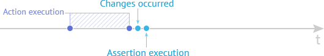
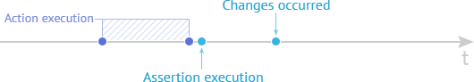
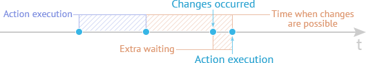

Assertions
To check if the state of the tested webpage matches the one you expect to see, use assertions.
TestCafe provides a comprehensive set of assertions that are based on Behavior Driven Development style (BDD-style). See Assertion API.
This topic contains the following sections.
Assertion Structure #
TestCafe assertions start with the expect method exposed by test controller.
This method accepts the actual value. You can pass a value, a Selector's DOM node state property
or a client function.
Then, an assertion method follows. Assertion methods accept an expected value and, optionally, other arguments.
For instance, the deep equality assertion has the following structure.
await t.expect( actual ).eql( expected, message, options );
The sample below demonstrates how to use assertions:
import { Selector } from 'testcafe';
fixture `Example page`
.page `http://devexpress.github.io/testcafe/example/`;
test('Check property of element', async t => {
const developerNameInput = Selector('#developer-name');
await t
.expect(developerNameInput.value).eql('', 'input is empty')
.typeText(developerNameInput, 'Peter Parker')
.expect(developerNameInput.value).contains('Peter', 'input contains text "Peter"');
});
Smart Assertion Query Mechanism #
In synchronous functional testing, you can perform the required assertions immediately after test action is executed:

On the web, functional tests are asynchronous. This means that we can not get the expected changes immediately after an end-user action. For example, the tested web page can send a request to the server for the required data, and this can take some time; or an end-user action launches animation after which the web page will reach its final state. All of these time gaps cannot be pre-calculated, because they depend on various factors: computer performance, network connection speed, etc. In this case, if we perform assertions immediately after the test action finished, we can get an indefinite result:

To perform asynchronous functional tests, an additional timeout as usually added:

To stabilize such tests, you need to add a timeout that will guarantee that the required changes are successfully applied. Adding such timeouts can increase the test running time because of extra waiting.
If the TestCafe assertion receives a Selector's DOM node state property or a client function as an actual value, TestCafe uses the smart assertion query mechanism: if an assertion did not pass, the test does not fail immediately. The assertion retries to pass multiple times and each time it requests the actual property value. The test fails if the assertion could not complete successfully within a timeout:
Example:
Assume you have the following web page.
<div id="btn"></div>
<script>
var btn = document.getElementById('btn');
btn.addEventListener(function() {
window.setTimeout(function() {
btn.innerText = 'Loading...';
}, 100);
});
</script>
Test code for this page can be as follows.
test('Button click', async t => {
const btn = Selector('#btn');
await t
.click(btn)
// A regular assertion will fail immediately, but TestCafe retries to run DOM state
// assertions many times within the timeout until this assertion passes successfully.
// The default timeout is 3000 ms.
.expect(btn.textContent).contains('Loading...');
});
The approach described above allows you to create stable tests free from random errors and running fast without additional waiting.
You can specify the assertion query timeout in test code by using the options.timeout option. To set the timeout when launching tests, pass the timeout value to the runner.run method if you use API or specify the assertion-timeout option if you run TestCafe from the command line.
Assertion options #
options.timeout #
Type: Number
The amount of time, in milliseconds, allowed for an assertion to pass before the test fails if a selector property or a client function was used in assertion.
Default value: timeout is specified by using the runner.run API method or the assertion-timeout command line option.
await t.expect(Selector('#elementId').innerText).eql('text', 'check element text', { timeout: 500 });
In addition to built-in assertions, you also can use assertions from Node's built-in assert module or choose a 3rd-party library you like (for example chai). In this case, you should care about the amount of time required to complete asynchronous actions using the t.wait(timeout) method.